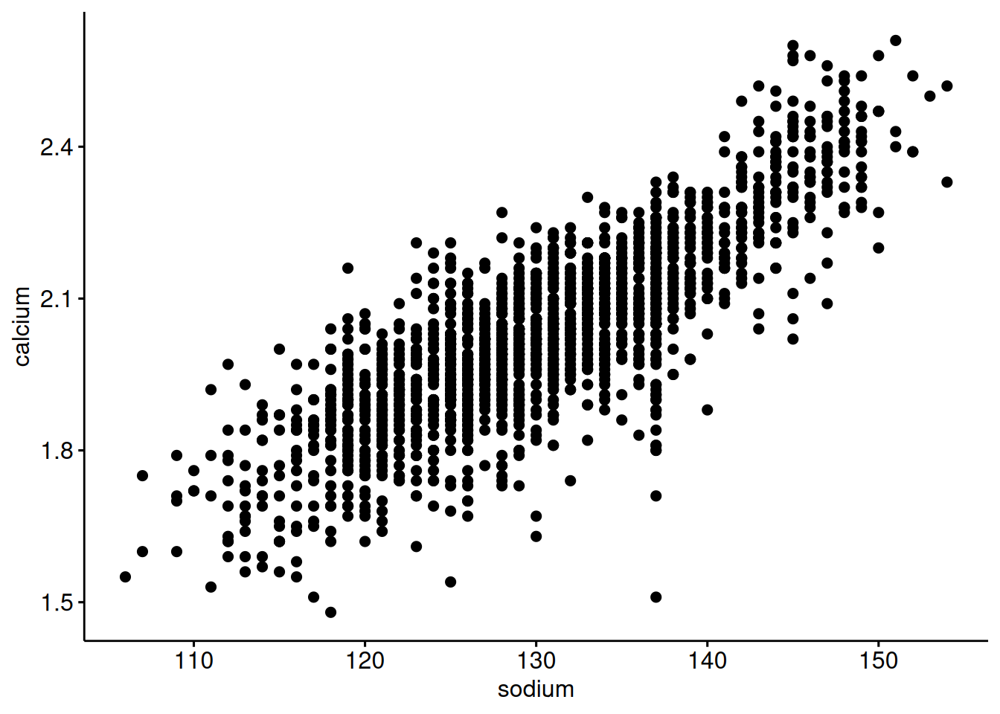
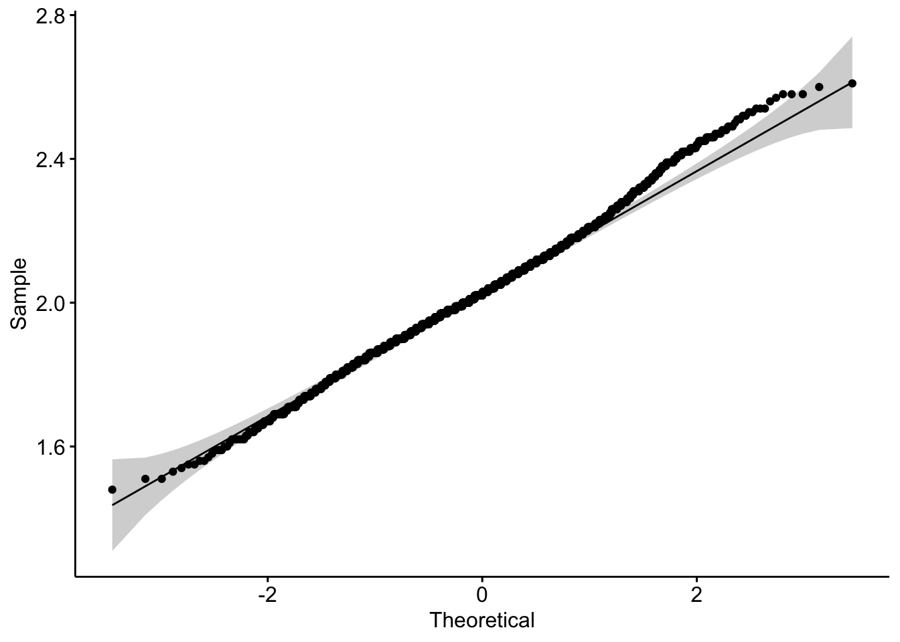
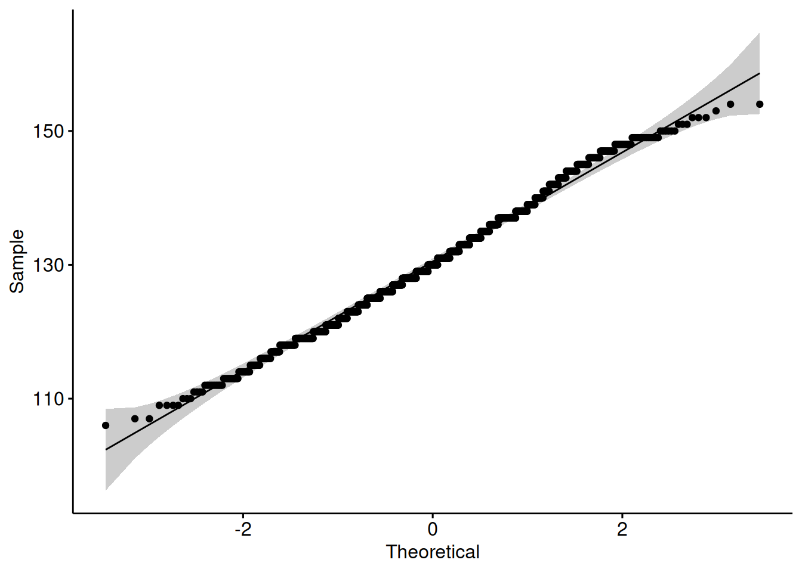

Problem Set Stats Bootcamp - class 13
Hypothesis Testing
biochem <- read_tsv(
"http://mtweb.cs.ucl.ac.uk/HSMICE/PHENOTYPES/Biochemistry.txt",
show_col_types = FALSE
) |>
janitor::clean_names()
# simplify names a bit more
colnames(biochem) <- gsub(
pattern = "biochem_",
replacement = "",
colnames(biochem)
)
# we are going to simplify this a bit and only keep some columns
keep <- colnames(biochem)[c(1, 6, 9, 14, 15, 24:28)]
biochem <- biochem[, keep]
# get weights for each individual mouse
# careful: did not come with column names
weight <- read_tsv(
"http://mtweb.cs.ucl.ac.uk/HSMICE/PHENOTYPES/weight",
col_names = F,
show_col_types = FALSE
)
# add column names
colnames(weight) <- c("subject_name", "weight")
# add weight to biochem table and get rid of NAs
# rename gender to sex
b <- inner_join(biochem, weight, by = "subject_name") |>
na.omit() |>
rename(sex = gender)Problem # 1
Is there an association between mouse calcium and sodium levels?
1. Make a scatterplot to inspect variable — (2 pts)
ggscatter(
data = b,
y = "calcium",
x = "sodium"
)
2. Are they normal (enough)? — (1 pts)
ggqqplot(data = b, x = "calcium")
b |> shapiro_test(calcium)# A tibble: 1 × 3
variable statistic p
<chr> <dbl> <dbl>
1 calcium 0.995 0.0000108ggqqplot(data = b, x = "sodium")
b |> shapiro_test(sodium)# A tibble: 1 × 3
variable statistic p
<chr> <dbl> <dbl>
1 sodium 0.995 0.00000432Which test will you use and why?
I will use the Pearson since the qqplots look ok and there are ~1700 observations. Spearman is fine too - especially since sodium looks a little like an integer and not continuous.
3. Declare null hypothesis \(\mathcal{H}_0\) — (1 pts)
\(\mathcal{H}_0\) is that there is no dependency/association between \(calcium\) and \(sodium\)
4. Calculate and plot the correlation on a scatterplot — (2 pts)
Problem # 2
Do mouse calcium levels explain mouse sodium levels? If so, to what extent?
Use a linear model to do the following:
1. Specify the Response and Explanatory variables — (2 pts)
The response variable y is sodium The explantory variable x is calcium
2. Declare the null hypothesis — (1 pts)
The null hypothesis is calcium levels do not explain/predict sodium levels.
3. Use the lm function to create a fit (linear model) — (1 pts)
also save the slope and intercept for later
4. Add residuals to the data and create a plot visualizing the residuals — (1 pts)
b_fit <- augment(fit, data = b)
avg_sod <- mean(b$sodium)
ggplot(
data = b_fit,
aes(x = calcium, y = sodium)
) +
geom_point(size = 1, aes(color = .resid)) +
geom_abline(
intercept = pull(int),
slope = pull(slope),
col = "red"
) +
scale_color_gradient2(
low = "blue",
mid = "black",
high = "yellow"
) +
geom_segment(
aes(
xend = calcium,
yend = .fitted
),
alpha = .1
) + # plot line representing residuals
theme_linedraw()
5. Calculate the \(R^2\) and compare to \(R^2\) from fit — (2 pts)
\(R^2 = 1 - \displaystyle \frac {SS_{fit}}{SS_{null}}\)
\(SS_{fit} = \sum_{i=1}^{n} (data - line)^2 = \sum_{i=1}^{n} (y_{i} - (\beta_0 \cdot 1+ \beta_1 \cdot x)^2\)
\(SS_{null}\) — sum of squared errors around the mean of \(y\)
\(SS_{null} = \sum_{i=1}^{n} (data - mean)^2 = \sum_{i=1}^{n} (y_{i} - \overline{y})^2\)
6. Using \(R^2\), describe the extent to which calcium explains sodium levels — (2 pts)
\(calcium\) explains ~68% of variation in \(sodium\) levels
7. Report (do not calculate) the \(p-value\) and your decision on the null — (1 pts)
The null hypothesis is calcium levels do not explain/predict sodium levels IS NOT SUPPORTED
Calcium levels to predict sodium levels.
Problem # 3
What is the association between mouse weight and age levels for different sexes?
1. Calculate the pearson correlation coefficient between weight and age for females and males — (2 pts)
2. Describe your observations — (2 pts)
The relationship between weight and age is stronger for males than it is for females.